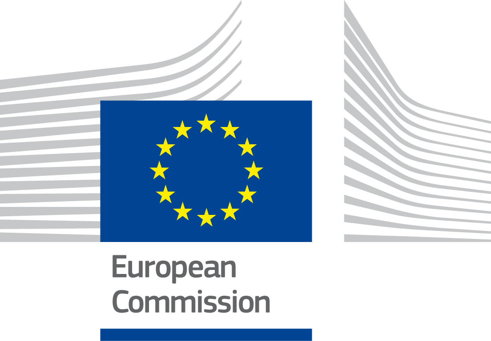
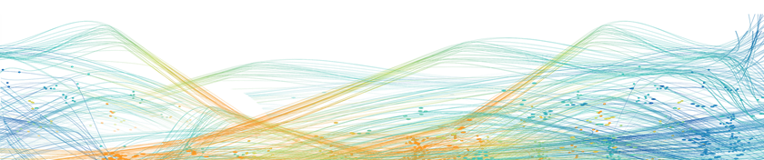
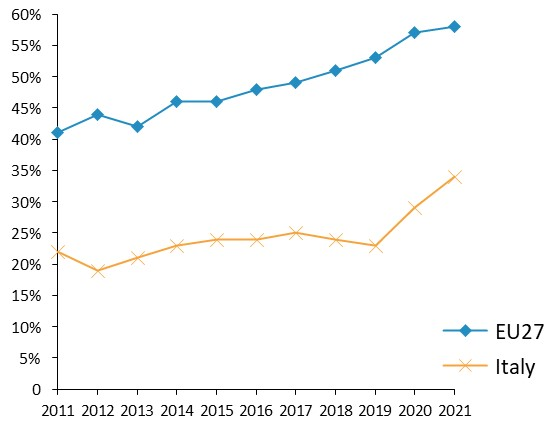
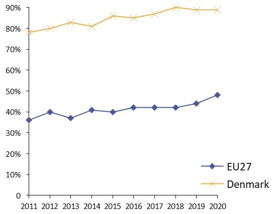
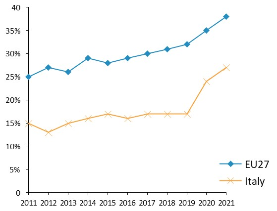
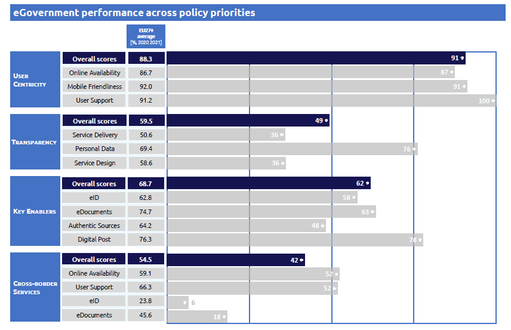

ISA2
Table of Contents
Digital Public Administration factsheet 2022
Italy
2 Digital Public Administration Highlights 9
3 Digital Public Administration Political Communications 12
4 Digital Public Administration Legislation 23
5 Digital Public Administration Governance 32
6 Digital Public Administration Infrastructure 36
7 Cross-border Digital Public Administration Services for Citizens and Businesses 47
Country
Profile
1
The following graphs present data for the latest Generic Information Society Indicators for Italy compared to the EU average. Statistical indicators in this section reflect those of Eurostat at the time the Edition is being prepared.
Percentage of individuals using the internet for interacting with public authorities in Italy | Percentage of individuals using the internet for obtaining information from public authorities in Italy |
 |  |
Percentage of individuals using the internet for downloading official forms from public authorities in Italy | Percentage of individuals using the internet for submitting completed forms to public authorities in Italy |
 |
|
In 2017, the European Commission published the European Interoperability Framework (EIF) to give specific guidance on how to set up interoperable digital public services through a set of 47 recommendations. The picture below represents the three pillars of the EIF around which the EIF Monitoring Mechanism was built to evaluate the level of implementation of the EIF within the Member States. It is based on a set of 71 Key Performance Indicators (KPIs) clustered within the three main pillars of the EIF (Principles, Layers and Conceptual model), outlined below.
Source: European Interoperability Framework Monitoring Mechanism 2021
For each of the three pillars, a different scoreboard was created to breakdown the results into their main thematic areas (i.e. the 12 principles of interoperability, the interoperability layers and the components of the conceptual model). The thematic areas are evaluated on a scale from one to four, where one means a lower level of implementation and 4 means a higher level of implementation. The graphs below show the result of the second EIF Monitoring Mechanism data collection exercise for Italy in 2021.
Source: European Interoperability Framework Monitoring Mechanism 2021
Italy’s results in Scoreboard 1 show an overall good performance in the implementation of the twelve principles, scoring as good as the European average in almost all the principles. Areas of improvements for Italy concern Principles 3 (Transparency) and 12 (Assessment of Effectiveness and Efficiency) for which the score of 2 shows a lower-medium performance in the implementation of corresponding recommendations. Particularly, the implementation of recommendations calling for internal visibility and the provision of external interfaces for European public services (Principle 3 – Recommendation 05) as well as the implementation of evaluation mechanisms to assess the effectiveness and efficiency of interoperable solutions (Principle 12 – Recommendation 19) is partial and could be improved to obtain the maximum score of 4.
Source: European Interoperability Framework Monitoring Mechanism 2021
Italy’s results for the implementation of interoperability layers assessed for Scoreboard 2 show an overall good implementation scoring at the European average on all layers. Despite receiving the highest score for the interoperability governance layer, Italy should work towards ensuring a holistic governance of interoperability activities across administrative levels and sectors (Recommendation 20).
Source: European Interoperability Framework Monitoring Mechanism 2021
The Italian results evaluating the Conceptual Model in Scoreboard 3 show a good performance of the country. Italy performs above the EU average in the security and privacy area, as well as in the external information sources and services area, obtaining the maximum score in the related recommendations. A potential area of improvement could be the conceptual model itself, and more precisely, Italy should decide on a common scheme for interconnecting loosely coupled service components and put in place and maintain the necessary infrastructure for establishing and maintaining European public services (Recommendation 35).
Additional information on Italy’s results on the EIF Monitoring Mechanism is available online through interactive dashboards.
The graph below presents the main highlights of the latest eGovernment Benchmark Report, an assessment of eGovernment services in 36 countries: the 27 European Union Member States, as well as Iceland, Norway, Montenegro, the Republic of Serbia, Switzerland, Turkey, Albania and Macedonia (referred to as the EU27+).
The study evaluates online public services on four dimensions:
The 2022 report presents the biennial results, achieved over the past two years of measurement of all nine life events used to measure the above-mentioned key dimensions. More specifically, these life events are divided between seven ‘Citizen life events’ (Starting a small claim procedure, Moving, Owning a car, Health measured in 2021, and Career, Studying, Family life, measured in 2020) and two ‘Business life events’ (Regular Business Operations, measured in 2021, and Business start-up, measured in 2020).

Source: eGovernment Benchmark Report 2022 Country Factsheets

Digital Public Administration Highlights
2
Digital Public Administration Political Communications |
In 2021 with the change of government and the appointment of the Minister for technological innovation and digital transition (MITD), a new plan “Italia digitale 2026” was issued.
The MITD Strategy “Italia Digitale 2026” is developed around 2 intervention areas that are included in the National Recovery and Resilience Plan (NRRP) under “Mission 1: Digitalization, Innovation, Competitiveness, Culture and Tourism”:
The two measures are made up of eight investments and a total budget for Italia Digitale 2026 amounting to EUR 13.45 billion.
In 2021, Italy also published the new IT National Interoperability Framework that rewrites from scratch the old framework that had been adopted for more than 15 years. The new framework aims to facilitate the creation of new user-centric and mobile first, digital public services based secure and interoperable REST APIs. It is meant to address both technological and organisational issues, and in particular the outstanding challenge of data sharing among public agencies.
Digital Public Administration Legislation |
The Governance and Simplification Decree (D.L. 77/2021) converted into law n.108/2021 in July 2021 was issued within the National Recovery and Resilience Plan. It establishes the Delegation Management System (SGD) that favours the system of delegations by subjects holding a digital identity with the aim to reduce the digital divide of citizens. It also strengthens the system of databases of national interest and the exchange of information through interoperability.
According to the Simplification and Digital Innovation Decree (DL n.76/2020), converted into law (n.120/2020) in February 2021, all administrations are required to migrate from the various online authentication methods to the Public Digital Identity System - SPID and the Electronic Identity Card. Thus, the administrations will no longer be able to issue or renew the old credentials. The credentials previously issued may be used until their natural expiration and no later than 30 September 2021.
Digital Public Administration Governance |
The provisions of Decree No 82 of 14 June 2021 established the National Agency for Cybersecurity (Agenzia per la cybersicurezza nazionale); the Agency is in charge of safeguarding the national interest in the area of cybersecurity, including the protection of cyber-defense interest. Moreover, the Agency is endowed with budget, regulatory, administrative, organizational, accounting and financial autonomy. https://www.acn.gov.it/
The Inter-ministerial Committee on Cybersecurity (Comitato interministeriale per la cybersicurezza) was set up by the Decree No 82 of 14 June 2021. It advises, proposes and deliberates on cybersecurity policies, also for the purposes of protecting national security in the cyber space.
Digital Public Administration Infrastructure |
The National Registry of the Resident Population is the national database containing the demographic data of all Italian residents, including those living abroad (registered with the AIRE). In January 2022, the migration of all Italian municipalities into the Italian National register office for the resident population was completed.
Dati.gov.it is the national catalogue of open data of Italian public administrations. It was created with the aim of aggregating in a single portal most of the open data exposed by the various administrations, both local and national.
The National Digital Data Platform (PDND) is a central catalogue of Application Programming Interfaces (APIs) shared across central and local administrations for the interoperability between base registries.

Digital Public Administration Political Communications
3
In 2021, with the change of government and the appointment of the Minister for Technological Innovation and Digital Transition, a new Italia Digitale 2026 plan was issued.
The MITD Strategy Italia Digitale 2026 hinges on 2 intervention areas included in the National Recovery and Resilience Plan (NRRP) under ‘Mission 1: Digitalisation, Innovation, Competitiveness, Culture and Tourism’:
The two measures are made up of eight investments and a total budget for Italia Digitale 2026 amounting to EUR 13.45 billion.
In order to implement this ambitious plan, Italia Digitale 2026 focuses on five main objectives that are consistent with the EU strategy Digital Compass 2030 targets:
Objectives | Italia Digitale 2026 | Digital Compass 2030 |
1) Digital Identity | 70% of population using digital identity | 80% of EU population |
2) Digital Skills | 70% of population reaching digital literacy | 80% of EU population |
3) Cloud and Digital Infrastructure | 75% of public administrations using cloud services | 75% of EU enterprises |
4) Digital Online Services | 80% of essential public services online
| 100% of essential public services |
5)Ultrafast Connectivity | 100% of families (in collaboration with MiSE)
| 100% of EU families |
Objective 1: Digital Identity and Citizenship
The digital transition of public administrations, from cloud to data interoperability, is accompanied by measures that aim at easing citizens’ life through better public services. The following measures will be put in place by 2026:
Objective 2: Digital skills
The digitalisation of public services and infrastructures is reinforced by measures promoting the development of citizens’ digital skills and ensuring solid and pervasive digital literacy. More traditional investments in education programs, platforms and infrastructure that cover the entire educational patterns of citizens are foreseen. Beside those, the Digital Civil Service (youth volunteering program) and the Digital Facilitation Services will allow 3 million citizens to develop basic digital skills, therefore bridging the digital divide.
Objective 3: Cloud and infrastructure
The digital transition of public administration follows a cloud-first approach that is oriented toward the migration of single administrations’ data and software in a cloud environment. Such a process will consolidate and rationalise many existing data centres, starting from those that do not fulfil the minimum safety, reliability and efficiency requirements (95% of the 11 000 data centres used by public administrations). Two alternative models are envisaged for central administrations: i) migration toward the National Strategic Pole (Polo Strategico Nazionale - PSN: new strategic cloud infrastructure, hybrid or private), or ii) migration toward the ‘public’ cloud of a certified market operator. In addition, Italy will put in place a programme supporting and incentivising the migration of local public administrations to cloud.
Objective 4: Digital Online Services
At the basis of public administration digitalisation lies the architecture and interconnection of administrations’ databases, which contribute to save time and resources for citizens and enterprises. The full interoperability of public administrations’ databases will extend the use of digital identity and digital domicile. The National Digital Data Platform (PDND) https://www.pagopa.it/it/prodotti-e-servizi/piattaforma-digitale-nazionale-dati will allow the creation of a unique ‘digital profile’ that follows the Once-Only-principle and will guarantee the interoperability of public sector information through a central catalogue of Application Programming Interfaces (APIs) shared across central and local administrations. Public and private entities will be able to use in an authorised and certified way the published APIs (eServices) in compliance with EU privacy laws. These eServices will enable the harmonisation with other EU countries of the service procedures prioritised by the Single Digital Gateway Directive. Semantic and syntactic interoperability of the eServices will be supported by the National Data Catalogue for Semantic Interoperability (NDC) schema.gov.it.
Objective 5: Ultrafast networks
To comply with the Gigabit society’s promise of high-quality fixed and mobile connectivity infrastructures, a technology neutral approach will be adopted. Italy therefore plans to put in place the following:
Three-Year Plans for IT in the Public Administration
The Three-Year Plan for IT in the Public Administration was defined in accordance with the Digital Growth Strategy, with the aim of targeting public sector ICT investments according to government guidelines and in line with European goals and programmes. The plan proposes a systematic, distributed and shared management and use model applicable to the most innovative digital technologies. This approach would be characterised by an agile and evolutionary management style, based on clear governance of the various levels of public administration. The synergy and balance between the three pillars (innovative technologies, agile management style and clear and effective model of governance) ensures the country is more effective in benefiting from new technologies and provides citizens with an advantage in terms of ease of access and improvement of existing digital services.
The AgID is in charge of executing the plan and coordinating the support to central and local public administration bodies in the implementation of the plan.
In March 2019, the Italian government approved the 2019-2021 Three-Year Plan for Information Technology in the Public Administration. The plan provided for initiatives to accelerate the transition to digital administrations and local entities and to empower citizens and businesses in being active protagonists of innovation.
The plan outlined the actions needed to promote the digital transformation of the public sector, moving in the same direction defined by the 2017-2019 plan. In particular, the new plan:
In October 2021, the Department for Digital Transformation and AgID published a new version of the Three-Year Plan for ICT in Public Administration (2021-2023). Representing the natural evolution of the previous three plans, the new plan is an important instrument to foster digital transformation in the country, particularly when considering the digitalisation of public administration. The fourth plan will focus on the implementation of the actions outlined in the previous plans, while monitoring the results that have been achieved to date. Additionally, the updated plan puts forward some new elements related to the National Recovery and Resilience Plan (PNRR) and the supervision of the digital transformation targets for the public administration at all levels. The plan has three main objectives:
Cloud Strategy
In September 2021, together with the National Agency for Cybersecurity in 2021, the DTD published the Italian Cloud Strategy (Cloud Italia), which sets out the path for public administrations, including local ones, to move to the cloud. The target is the migration to the cloud of 75% of Italian public administrations by 2026.
Promoting the adoption of secure, efficient, sustainable and reliable data processing infrastructures, the strategy aims to overcome a long-standing weakness of the Italian public administration. At the core of the approach, there is the identification of risks linked with different public data and service types and the most suitable cloud delivery modes (public, hybrid or private) to mitigate those risks.
The strategy is structured along the following lines:
Berlin Declaration on Digital Society and the Value-Based Digital Government
In December 2020, the Italian government signed the Berlin Declaration on Digital Society and the Value-Based Digital Government, thus reaffirming its commitment – together with other EU Member States – to foster digital transformation in order to allow citizens and businesses to harness the benefits and opportunities offered by modern digital technologies. The declaration aims to contribute to a value-based digital transformation by addressing and strengthening digital participation and digital inclusion in European societies.
IT National Interoperability Framework
In 2021, Italy published the new IT National Interoperability Framework, which rewrote the old 15-year old framework from the ground up. The new framework aims to ease the creation of new user-centric, mobile first, digital public services based on secure and interoperable REST APIs. The goal is achieved by addressing both technological and organisational issues, especially the ones related to in data sharing hurdles between agencies.
The Digital Administration Code introduced a National API Catalogue with identification and authorisation features that will allow all public administrations to streamline the bureaucratic processes required to discover and exchange data between agencies. This catalogue can be consulted and accessed by all agencies and will be used like a ‘marketplace’ for agencies to consume information.
To ease the creation of cross-border digital services, Italy worked in close connection with global standard-defining organisations such as the Internet Engineering Task Force and with other European Member States and the European Commission to identify and define standards supporting the creation of innovative digital services.
Fourth Open Government Partnership Action Plan
In June 2019, Italy published its Fourth Open Government Partnership Action Plan. The plan, covering the period 2019-2021, aims at transforming the relationship between citizens and the public sector. The plan is the outcome of complex coordination work of all institutional and civil society representatives on ten thematic areas:
Along the most consolidated sectors of open government – open data, transparency, digital skills and services – the plan presents new measures on consultation policies, the register of beneficial owners and regulations on stakeholders, proving that opening processes are now mature.
The Fourth Action Plan relies upon two main innovations ensuring a higher quality of commitments compared to the previous action plans. First, the involvement of the Open Government Forum represented a key element as both public administration bodies and civil society organisations were able to discuss and agree upon the objectives to be achieved by 2021. Second, the final document shifted from a high number of actions implemented by single administrations to a smaller number of actions shared by different administrations. This enabled a more efficient convergence of the actions and the optimisation of resources.
In May 2020, the Italian government was appointed as member of the Steering Committee of the Open Government Partnership. Hence, as a member of the committee, the Italian government played an important role in bringing together governments, the civil society and all the other stakeholders to guarantee an open and effective response to the COVID-19 crisis.
No political communication was adopted in this field to date.
Cybersecurity in the PNRR
Digitalisation increases the vulnerability of society that may face the risk of multiple cyber threats, such as frauds, blackmailing and terroristic attacks.
Four national measures will reinforce the implementation of the Cybersecurity National Perimeter PNSC (D.P.C.M. no. 131 of 30 July 2020 on the Regulations regarding the National Cybernetic Security Perimeter was published in the Official Gazette no. 261 of 21 October 2020 and will enter into force on 5 November 2020):
No political communication was adopted in this field to date.
No political communication was adopted in this field to date.
Connected School
This project aims at completing the intervention started in 2020. Its goal is to provide free Internet connection for 5 years (fibre optic with at least 1 Gbps symmetric speed) to approximately 35 000 schools (out of a total of 40 000), with maintenance and assistance services. The total planned investment is over 400 million euros. On this point, it should be noted that on 21 January 2021, the European Commission formally approved the Italian aid scheme of 325 million that will allow 12 000 schools to have an ultra-fast Internet connection. The measure will also help students and educators in the context of the Coronavirus pandemic by giving them access to current and future online educational tools. This Commission decision allows the use of public funds to provide very high-speed Internet services to schools in areas where private investment is insufficient. The measure that Italy notified to the Commission concerns only schools where broadband network with download speed exceeding 300 Mbps is not available nor is it planned to be implemented in the near future. It is possible to understand the status of operation from the system dashboard on the institutional website of Infratel Italia S.p.a. with the indication of the buildings in the georeferenced map and the relative connection status.
With reference to the PNRR, the Connected Schools measure, with a total budget of 261 million euros, aims to complete the intervention described above, providing the remaining 10 000 school buildings throughout the country with free 1 Gbit/s symmetric connectivity as well as related technical assistance, management and maintenance services for 6 years.
At the end of 2021, over 6 000 school buildings were connected under the existing school plan. The tender for the Connected Schools measure funded by the PNRR was launched in January 2022. The deadline for awarding this tender is 30 June 2022. After the award, the 10 000 remaining school facilities will start being connected.
Connected Health Plan
The plan aims to provide approximately 12 300 healthcare facilities across the country with ultra-broadband symmetric connectivity of at least 1 Gbit/s and up to 10 Gbit/s, depending on their type. The total budget of the intervention is 501 million euros. The new network will consist of active and passive elements (including dark fibre and active equipment). Once connected to the new network infrastructures, healthcare facilities will benefit from ultra-broadband connectivity services, technical assistance as well as management and maintenance services. Healthcare facilities will also receive the terminal equipment (modem/router) needed to connect to the network. The measure will be implemented through direct investment models. The new network will be fully financed and owned by the State and will be managed by one or more operators who will be selected on the basis of a competitive, open, transparent and non-discriminatory selection process.
The tender of the Connected Health plan was launched in January 2022. The deadline for awarding this tender is 30 June 2022. After the award, the health facilities will start to be connected according to the service requirements described above.
Guidelines on the Acquisition and Reuse of Software for Public Administration Bodies
Articles 68 and 69 of the Italian Digital Administration Code - (Codice dell’Amministrazione digitale) provide for the acquisition of software by public administration and establish the obligation to release the software developed or commissioned with an open licence.
The Guidelines for Software Acquisition and Reuse implement the provisions of Articles 68 – Comparative Analysis of Solutions – and 69 – Reuse of Solutions and Open Standards – of the Digital Administration Code, and in accordance with Article 71 on Technical Rules.
The purpose of the document, which replaced the previous circular No. 63/2013, entitled Guidelines for Comparative Assessment, pursuant to Article 68 of Legislative Decree No. 82 of 7 March 2005, (Digital Administration Code and its annexes), was to facilitate public administration bodies in the acquisition and reuse of software through the open-source paradigm.
In line with the provisions of the circular, and the Three-Year Plan for Information Technology in the Public Administration, AgID provides a catalogue of source code repositories (archives), which brings together open-source applications that could be used by all public administration bodies and the community of developers working for them. This catalogue is publicly accessible for the benefit of all citizens, companies and administrations as a sub-section of developers.italia.it.
The guidelines are also based on the Three-Year Plan, which includes the following strategic objectives:
Strategic Programme on Artificial Intelligence (2022-2024)
In November 2021, the Italian government published its Strategic Programme on Artificial Intelligence 2022-2024. The strategy is the result of a harmonious collaboration between the Ministry of Education, University and Research, the Ministry of Economic Development, and the Minister of Technological Innovation and Digital Transition. The strategy is funded through Italy’s National Recovery and Resilience Plan (PNRR). Its objective is to radically upgrade the Italian strategy on AI by building on the key strengths of the national ecosystem while addressing the main areas for improvement. In this regard, the programme defines six objectives, eleven priority sectors to pull investments and three areas of intervention that detail how the country is planning to achieve the six goals of this programme.
The strategic programme revolves around three main areas of intervention, namely:
Working group for blockchain technologies
In 2020, the Ministry of Economic Development selected a work group of 30 experts to identify possible developments of blockchain technologies. The group produced the Proposals for an Italian strategy in the field of technologies based on shared ledgers and Blockchain, that was put out for public consultation in June 2020.
In December 2021, a 45 million fund was established with the aim of supporting R&D projects for the development of AI, blockchain and the Internet of Things (IoT).
No political communication was adopted in this field to date.
Cloud Strategy
In September 2021, the Department of Digital Transformation and the Agency for National Cybersecurity published the Cloud Strategy for Italy. The document describes the strategic programme, the implementation and the supervision of cloud technologies in the public administration. The strategy builds upon three main areas of intervention, namely (i) the creation of a national infrastructure for the provision of cloud services that will be set up and operate without any influence from extra-EU public and private actors; (ii) a qualification process for public cloud providers and their services to ensure that the declared characteristics and service levels are in line with the necessary requirements of security, reliability and compliance with relevant national and EU regulations; and (iii) the development of a methodology for classifying data and services managed by public administrations, to allow them to be migrated to the most appropriate Cloud solution (PSN or qualified public Cloud). For further information see also above.
No political communication was adopted in this field to date.
In 2011, the Ministry for Economic Development earmarked EUR 17,7 million to finance innovative projects of Italian companies in the field of supercomputing and data processing through high-tech microprocessors.
The measure is aimed at companies that have already been selected as part of the two calls issued in 2020 by the EuroHPC (European High-Performance Computing) joint undertaking, which is part of the industrial strategy of the European Union.
EuroHPC is an initiative promoted jointly by the EU, Member States and private partners, which aims to develop a pan-European supercomputing infrastructure and to support cooperation in scientific research, increase industrial competitiveness and, at the same time, guarantee European technological and digital autonomy.
Italy at 1 Giga Plan
The Plan has the objective to provide about 7 million street addresses with at least 1 Gbit/s download and 200 Mbit/s upload capacity under usual peak-time conditions, in compliance with the principle of technological neutrality. In particular, the measure, with a budget of approximately 3.7 billion euros, aims at covering the real estate units that, according to the mapping exercise conducted, have not been covered (currently and up to 2026) by networks capable of providing at least 300 Mbit/s download speed under usual peak-time conditions.
The Italian Government, in compliance with the rules defined by the European legislation on state aid, must ensure that public intervention is limited to market failure NGA areas, i.e., those where there are no infrastructures capable of reaching, in reasonable times, the connectivity performance of 300 Mbps download speed under usual peak-time conditions that is necessary to meet user needs as defined in the strategy. Therefore, the Italian Government must ensure that public investments do not overlap with the private investment plans already envisaged by operators. The first step in defining the exact scope of intervention under the Italy at 1 Giga Plan was updating the mapping exercise concerning the ultrabroadband fixed networks in grey and black areas) as well as in the so called 2016 white areas. The outcome of the mapping was shared with the stakeholders as part of the public consultation in which the target areas, as well as the other characteristics of the measure, were precisely indicated, including the public intervention model.
In January 2022, the request for State aid was approved, and the tenders for the realisation of the networks was launched. The deadline for awarding the tender is 30 June 2022. After the award, the first households will start being connected according to the service requirements mentioned above.
Minor Islands Plan
The plan aims to provide adequate connectivity to 18 smaller islands that today have no fibre optic connectivity with the mainland. In particular, the islands will be equipped with optical backhaul that will allow the development of ultra-broadband connectivity. The optical backhaul will be accessible to all operators through the Submarine Backhaul Access Point, identified according to the shortest distance from the neutral delivery point (NDP), if present on the island, and from the landing point of the submarine cable. The overall budget for this Plan is € 60.5 million. The measure will be implemented through direct intervention models. The new network will be fully funded and owned by the State and will be managed by one or more operators, selected on the basis of a competitive, open, transparent and non-discriminatory selection process. The following islands have been identified: Capraia, Favignana, Lipari, Stromboli, Alicudi, Panarea, Filicudi, Salina, Lampedusa, Linosa, Pantelleria, Ustica, Ponza, Ventotene, Asinara, Tremiti Islands, Pelagie Islands, Sulcitanee islands.
Italy 5G plan
In order to better address public initiatives aimed at the creation of networks able to provide innovative and high-performance mobile services, this plan is complementary and synergetic with respect to the national 5G networks development plan already started and the coverage obligations of mobile radio operators, in compliance with the constraints imposed by the rules on State aid. In particular, the plan, with a budget of 2.02 billion euros, aims to encourage the development of 5G mobile networks in market failure areas, in order to fully satisfy the needs for a mobile connectivity that can enable the multiple use cases envisaged by the ITU, related to the three categories, namely enhanced Mobile BroadBand (eMBB), massive Machine Type Communication (m-MTC), and Ultra-Reliable Low Latency Communication (URLLC), which together represent a real technological breakthrough that has led to consider 5G as the ‘evolution and revolution’ of mobile radio systems.
To this end, the plan envisages two distinct and complementary lines of action: a) the implementation of fibre optic backhauling for mobile base stations that, based on the plans declared by the operators during the mapping stage, will not have fibre backhauling by 2026; b) the implementation of new network infrastructures providing mobile radio services with adequate performance to satisfy user needs in areas where, on the basis of the mapping exercise, the downlink speeds expected by 2026 is less than 30 Mbit/s under usual peak-time conditions.
During 2021, a detailed mapping exercise was carried out, involving mobile operators, aimed at understanding the current and expected (by 2026) characteristics and performance of the mobile networks connections based on the investment plans declared by the mobile operators. The public consultation on the plan was carried out between 15 November and 15 December. Taking into account the results of the public consultation, in the first months of 2022 a request for State aid was submitted to the European Commission. After the approval by the Commission, the tender will be launched, in order to select the operators who will build the networks. The deadline for awarding the tender is 30 June 2022. After the award the deployment phase will begin.
Digital Public Administration Legislation
4
Law No. 108/2021 Cap. II
The Governance and Simplification Decree (D.L. 77/2021) converted into law No. 108/2021 in July 2021 was issued in the context of the National Recovery and Resilience Plan. It establishes the Delegation Management System (SGD) that favours the system of delegations by subjects holding a digital identity with the aim to facilitate the overcoming of the digital divide among citizens. It also strengthens the system of databases of national interest and the exchange of information between them through interoperability. Furthermore, it introduces simplification measures regarding public data and authorisation procedures for the installation of electronic communication infrastructures and digital infrastructure of buildings.
According to the Simplification and Digital Innovation Decree (DL n.76/2020), converted into law (No. 120/2020), in February 2021, all administrations are required to migrate from the various online authentication methods to the Public Digital Identity System - SPID and the Electronic Identity Card. Thus, administrations will no longer be able to issue or renew the old credentials. The credentials previously issued may be used until their natural expiration and no later than 30 September 2021.
Digital identification is equivalent to showing an identity document and is extended for access to the services of public concessionaires and publicly owned companies.
Law No. 160/2019
Law No. 160/2019 aims at further supporting the Italian Digital Agenda by earmarking EUR 5 million for a two-year period between 2020 and 2021. Additionally, the law assigns to the Department of the Presidency of the Council of Ministers a new role in the identification, promotion and management of projects related to innovation technology and digital transformation. Lastly, the law foresees the development of a digital notifications’ platform. This platform shall be used by all public administration bodies.
The law (Art. 1) also provides for the establishment of the Minister of Technological Innovation and Digital Transformation to which the President of the Council of Ministers delegate the task to spread of technology use among citizens, businesses and public administrations.
Circular No. 3/2018 - Responsible for the digital transition
The Minister for Simplification and Public Administration issued Circular No. 3 of 1 October 2018 urging all public administrations to identify within their organisations a Director or Head of Unit who is responsible for the digital transition (Responsabile della Transizione Digitale).
Legislative Decree No. 217/2017
The last reform of the Digital Administration Code (Codice dell’Amministrazione Digitale – CAD) laid down the legal foundations for many of the services established in the Three-Year Plan for IT in the Public Administration.
Many online services are already being implemented, such as the Digital Citizenship or the Data and Analytics Framework (DAF), and even the service for the selection of citizens’ digital domicile.
The latest version of the code set forth important modifications, as for instance:
Legislative Decree No. 179/2016
Legislative Decree no 179 of 26 August 2016 amended the Digital Administration Code (DAC) and introduced new changes and integrations to the code.
The main objective of the reform was to shift the focus from the digitalisation process to the digital rights of citizens and businesses.
New Interoperability Guidelines for Public Administration Bodies
Circular No. 1 of 9 September 2020 defines the new interoperability guidelines for public administration bodies in line with the EIF model. The guidelines set the technical interoperability that all public administrations have to comply with in order to ensure the interoperability of their systems with third parties and to foster the implementation of the national IT system of the public administration. Particularly, public administrations at all levels shall comply with these technical standards and use patterns and profiles foreseen by this new interoperability model.
Act No. 627/2021
Agid Act No. 627/2021 sets out the ‘Guidelines on the technological infrastructure for the National Digital Data Platform for the interoperability of information systems and registries’ (Digital Administration Code, article 50-ter). This Act provides all the technical and organisational framework to support a streamlined mechanism for sharing and using information between agencies with the goal of providing new digital public services.
Legislative Decree No. 97/2016
Legislative Decree No. 33 of 14 March 2013 “Reorganisation of the Discipline Concerning the Obligations of Publicity, Transparency and Dissemination of Information by Public Authorities”, was adopted by the government under Law No. 190/2012, bringing into force the systematisation of the main publication requirements.
The legislative decree continued in the direction taken by law 190/2012 (anti-corruption law) and, through greater transparency of all public authorities, had as its main objectives to:
In May 2016, Legislative Decree No. 97 of 25 May 2016 redefined the scope of the obligations and measures regarding transparency and the measures for publishing some specific types of information. It reduced the burden on public administration bodies by identifying the parties responsible for imposing penalties for violating the transparency obligations. The legislative decree also introduced the Freedom of Information Act (FOIA) which allows citizens to access public administration data and documents even if they have not been made publicly available.
Law on Administrative Procedure and Access to Administrative Documents
Chapter V of Law No. 241 of 7 August 1990 provides for limited rights of access to administrative documents. Public bodies must respond to a request for administrative documents within 30 days. Information can be withheld when it relates to (a) security, national defence and international relations; (b) monetary and foreign exchange policy; (c) public order, prevention and repression of crime; and (d) privacy of third parties. Appeals can be submitted to a regional administrative court, whose decisions can be appealed before the Council of State.
In 2015, Law No. 124 of 7 August 2015 simplified the administrative procedures for Italian public administration bodies and introduced new elements, such as the electronic ID card, and updated the regulation on transparency.
Legislative Decree No. 102/2015
In January 2006, Legislative Decree No. 36 transposed the EU Directive on the re-use of public sector information (Directive 2003/98/EC). The Italian government drafted an amendment to Legislative Decree No. 36 of 24 January 2006 on the re-use of documents in the public sector that correctly transposed Directive 2003/98/EC on the re-use of public sector information, following controversy on the correct transposition of the Directive on PSI re-use in Italy.
In 2015, to harmonise the national legislation with Directive 2013/37/EU, Italy enacted Legislative Decree No. 102/2015. It defines, among other things, the new conditions for telematic access and re-use of data coming from public administration bodies. In addition, it set the standards for open data by default.
Digital Administration Code (CAD)
In 2017, the Digital Administration Code (CAD) (issued for the first time in 2005) was updated by Legislative Decree No. 217/2017. The amendments concerned numerous aspects of the previous regulation and in particular the part relating to the digital domicile and public mailing lists, with the aim of further facilitating the use of electronic communication systems. New provisions were also introduced to confer legal value to electronic documents.
Legislative Decree No. 82 on Electronic Signatures
Italy was among the first EU countries to give full legal value to electronic signatures. in Article 15, Law No. 59 (15 March 1997) Simplification of the Public Administration” provided that the use of electronic means would be legally valid for administrative procedures. Rules regarding the use of electronic signatures and documents were further detailed in a series of presidential and government decrees adopted between 1997 and 2001. Legislative Decree No. 10 of 23 January 2002 brought the Italian electronic signature regulations in line with Directive 1999/93/EC on a Community framework for electronic signatures.
Legislative decree of 14 June 2021
Decree No. 82 of 14 June 2021 on Urgent measures on cybersecurity, definition of the national cybersecurity architecture and establishment of the National Cybersecurity Agency attributes the responsibility for the national cybersecurity policy to the President of the Council of Ministers, who enacts the national cybersecurity strategy under the advice of the Inter-ministerial Committee on Cybersecurity (Comitato interministeriale per la cybersicurezza). Furthermore, the decree establishes three bodies, namely the Inter-ministerial Committee on Cybersecurity, the Agency for National Cybersecurity and the Cybersecurity Centre.
Law No. 133/2019
Law No. 133/2019 on urgent measures concerning national cybersecurity aims at ensuring a high level of security of the information systems both of public entities and private organisations that provide essential public services. The identification of the entities concerned by the law has been delegated to a Decree of the President of the Council of Ministers upon proposal of the Comitato Inter-Ministeriale per la Sicurezza della Repubblica to be issued within four months after the approval of the law.
Legislative decree of 8 August 2019
The Decree of the Presidency of the Council of Ministers of 8 August 2019 set out the rules implementing the Italian Computer Emergency Response Team (CSIRT), established by Legislative Decree 65/2018, transposing Directive (EU) 2016/1148 (NIS Directive).
Data Protection Code
In 2004, the Data Protection Code entered into force, replacing the previous Data Protection Law (Law No. 675/1996), as well as a number of other legislative and regulatory provisions.
The Data Protection Code updated the completed and consolidated Italian data protection legislation (1996) by introducing important innovations conforming national legislation to European regulations, in particular the Data Protection Directive (95/46/EC) and the Directive on Privacy and Electronic Communications (2002/58/EC). The code strengthened the data protection rights of individuals, allowing them to exercise their rights and instigate proceedings more easily.
The code was further amended on 4 November 2010, and again in 2018. Legislative Decree No. 101/2018 harmonised the national regulation with the provisions of Regulation (EU) 2016/679, concerning the protection of natural persons with regard to the processing of personal data, as well as to the free movement of such data.
The Data Protection Commissioner (Garante della Privacy) is in charge of supervising and enforcing the application of the Data Protection Code. In an effort to simplify the complaint process, the Commissioner published a complaint form on its website.
Legislative Decree No. 91/2014
Legislative Decree No. 32/2010 transposes the European Directive 2007/2/EC establishing “an infrastructure for Spatial Information in the European Community (INSPIRE)”. The decree assigns to the Italian National Directory of Geographic Data (Repertorio nazionale dei dati territoriali, set up by Legislative Decree No. 82/2005 of the Digital Administration Code) the function of national metadata catalogue. In 2014, Legislative Decree No. 91/2014 aligned national legislation with the new parameters set by the European legislation.
National Registry of the Resident Population
The National Registry of the Resident Population (ANPR) was set up by the Digital Administration Code, Chapter V - Data of Public Administration and Network Services, Article 62. It defined the ANPR as a merger of the Index of National Registries (INA) and the Register of Italian Citizens Residing Abroad (AIRE). Regarding the use of personal data, the Digital Administration Code mandates that personal data be stored locally and aligned continuously with the ANPR (see below for further details). Furthermore, the ANPR also granted other public administration bodies and organisations access to its data for the purpose of providing services.
Land Registry
The Land Registry or the National Directory of Geographic Data (RNDT) is also prescribed for in Article 59 of the Digital Administration Code. It gathers geographic data held by public authorities at the national, regional and local level. Thus, Article 59 establishes the technical rules for the gathering of spatial data to be implemented by public authorities. These rules apply to the establishment of spatial databases, documentation, usability and the exchange of data between central and local public administration bodies under the provisions of the Digital Administration Code.
Registry of Companies
The legal base for the Registry of Companies is Article 2188 of the Civil Code. The Registry has been fully operational since 19 February 1996, under Article 8 of Law No. 580 of 29 December 1993 on the Reorganisation of the Chambers of Commerce along with DPR 581/95, containing the special regulations for the implementation of the Registry’s activities.
Once-Only Principle
In Italy, the Once-Only principle was transposed into legislation through Decree No. 82 of 7 March 2005, i.e. the Digital Administration Code, arts. 50 and 58. Both articles state that public administration bodies need to cooperate with each other to obtain the required information, rather than acquiring it from citizens who are not obliged to provide the same information to the public administration more than once. As a result, the steps undertaken for applying the OOP included the creation of common data models for some databases or base registries, such as the National Directory of Geographic Data (RNDT), and the National Registry of the Resident Population (ANPR). Nonetheless, Italy still had to invest efforts towards applying the principle in a broader scope, and in turn, ensure that public administration bodies exchange data between each other without requesting additional data from citizens or enterprises.
In addition, in compliance to the Once-Only principle, Italy is implementing the Single Digital Gateway (SDG) project: by 2023, through a single access point citizens will be able to access information on existing national and European regulations on business, employment, education, health and taxation and will be able to complete 21 administrative procedures, as established by EU Regulation 2018/1724 in all EU countries entirely online.
The project requires the interoperability between different public administrations and is funded by the National Recovery and Resilience Plan.
Decree No. 148 of 12 August 2021 sets out the digital procedures for public procurement and implements art. 44 of Legislative Decree No. 50/2016. The regulation provides the technical rules to define the methods and processes of digitalisation, including the description of flows, data schemes, and European standards of interoperability. It also provides the supervisory and control bodies foreseen for by the Public Procurement Code as defined by the Agency for Digital Italy (AgID) with specific guidelines.
Legislative Decree No. 50/2016
Legislative Decree No. 50 of 18 April 2016 amended the previous Public Procurement Code and implemented Directives 2014/23/EU, 2014/24/EU and 2014/25/EU.
Public Procurement Code
Adopted on 12 April 2006, the Public Procurement Code implemented Directive 2004/17/EC coordinating the procurement procedures of entities operating in the water, energy, transport and postal services sectors, as well as Directive 2004/18/EC on the coordination of procedures for the award of public works, public supplies and public service contracts. The code introduced provisions relating to eAuctions, the dynamic purchasing system, eCatalogues and other electronic means used in public procurement procedures.
Presidential Decree DPR 207/2010
In April 2002, Presidential Decree DPR 101/2002 established the framework for an electronic procurement procedure (gara telematica) above EU thresholds, and the eMarketplace (MEPA) for public procurements below EU thresholds. The decree has also tasked the Ministry of Economy and Finance to build and run a centralised eMarketplace accessible to all Italian public administration bodies (MePA - Mercato Elettronico della Pubblica Amministrazione). The Ministry once again entrusted Consip to implement and manage the MePA. The DPR was repealed by the Presidential Decree DPR 207/2010 that implemented Directive 2004/17/CE and Directive 2004/18/CE.
Determinazione 36/2018 AgID
Determinazione 36/2018 AgID of 12 February 2018, concerned the reorganisation of the second level of the web-domain .gov.it. Within the web domain .gov.it, third level-domains were assigned only to the central administrations listed in Article 1, Paragraph 3 of Law No. 196 of 31 December 2009. In February 2018, this list was amended, ordered and published in the Official Journal. Subsequently, in collaboration with MIUR and CNR, a roadmap was defined to assist the migration path of organisations such as schools (from gov.it to edu.it) and local authorities (from gov.it to .it).
Within its first year of publication, and only six months after opening up the registration process to the domain edu.it, more than 4 000 schools migrated to the domain edu.it.
Health Card System Legislation
During the fiscal year 2019, individuals were required to send data to the Health Card system for the purpose of processing the pre-filled tax return, pursuant to Article 3, Paragraphs 3 and 4 of Legislative Decree No. 175 of 21 November 2014. Fiscal data transmitted to the Health Card System could only be used by public administration bodies for the application of tax and customs provisions, or, in aggregate form, for the monitoring of public and private health expenditure. By decree of the Minister of Economy and Finance, in agreement with the Ministers of Health and Public Administration, having consulted with the Personal Data Protection Commissioner, the terms and scope of use of the aforementioned data and the relative limits, including time limits, were defined. The terms and scope of use were compliant with the principles on personal data protection, also with reference to the obligations set out in Articles 9 and 32 of Regulation (EU) 2016/679 of the European Parliament and of the Council of 27 April 2016, as well as with Legislative Decree No. 196 of 30 June 2003, describing the types of data that may be processed, the operations that may be carried out, and the appropriate and specific measures to protect the rights and freedoms of the person concerned.
Decree-Law No. 135 of 14 December 2018, amended by Law No. 12 of 11 February 2019, provided that the provisions of Article 10(a) of Decree-Law No. 119 of 23 October 2018, amended by Law No. 136 of 17 December 2018, also applies to persons who are not required to send data to the Health Card System, with reference to invoices for health services provided to natural persons. As of January 2022, there were 57M active cards.
The Ministry of Health and the Ministry of Innovation and Digital Transition identified a detailed roadmap and developed an action plan to design the new EHR, implement new IT infrastructure at local and central level, support and drive change management, and device communication strategy for citizens, general practitioners (GPs) and MDs specialists.
At the core of the plan is the implementation of the central repository that will allow interoperability among the 21 Italian regions, so that at least 85% of GPs will use the EHR, and all Italian regions will provide their citizens with clinical referrals by 2026.
The plan involves the following steps:
1. EHR Digital Transformation Strategy Q3-2021 / Q3-2022;
2. Central Repository implementation Q3-2022 / Q2-2024;
3. Central Repository roll out in all regions Q4-2024 (TBC); and
4. Transition to the new system for all regions and increase the number of the clinical documents available on the EHR (Q2- 2026).
For the period Q1-2021 / Q1-2022, the following actions were and are to be taken:
Therefore, the PNRR have allocated resources to strengthen the electronic health record (fascicolo sanitaria elettronico FSE), ensure its dissemination throughout the national territory and reinforce the New Health Information System, the infrastructure and tools allowing the monitoring of the LEA (Essential Levels of Assistance) and planning of health services. Through general practitioners, the collection of data will be standardised and medical records will be updated continuously. Furthermore, a central archive will be created and financial support will be provided to the regions that will adopt the FSE platform. The electronic health record will contain all the patient's clinical history and will help the ASLs to perform clinical data analysis and improve the provision of health services.
Legislative Decree No. 90/2014
Legislative Decree No. 90 of 14 June 2014 on Simplification and Administrative Transparency and Efficiency of the Courts introduced some important features regarding online civil proceedings and services via certified e-mail carried out by lawyers. By means of this decree, the electronic filing of documents during civil proceedings became mandatory. The decree also expanded and clarified the cases in which lawyers can serve judicial documents via certified e-mail.
Legislative Decree on Electronic Commerce
Legislative Decree No. 70 of 9 April 2003 came into force on 14 May 2003. It regulates the use of electronic commerce in Italy, as well as the information that eCommerce websites must provide to purchasers. The decree transposed Directive 2000/31/EC on certain legal aspects of information society services, in particular electronic commerce in the Internal Market (Directive on Electronic Commerce).
No legislation was adopted in this field to date.
Blockchain legislation
Decree-Law No. 135 of 14 December 2018, amended by Law No. 12 of 11 February 2019, introduced into the Italian legislation the concepts of distributed ledger technology and smart contract. These definitions represent the first attempt made by the government to define and include blockchain within the Italian legislative framework. Additionally, the law could constitute the starting point for more extensive national regulation on blockchain technologies.
No legislation was adopted in this field to date.
No legislation was adopted in this field to date.
No legislation was adopted in this field to date.
No legislation was adopted in this field to date.
No legislation was adopted in this field to date.

Digital Public
Administration
Governance
5
For more details on Italy’s responsible bodies for digital policy and interoperability, its main actors, as well as relevant digital initiatives, please visit the NIFO collection on Joinup.
Ministry of Technological Innovation and Digital Transition
The Minister of Technological Innovation and Digital Transition (MITD) is in charge of coordinating eGovernment tasks at all levels of the Italian administration (central, regional and local). It ensures consistency among digital innovation policies conducted at central and local levels while coordinating projects involving several administrations. The Ministry also acts as an observatory on the information society and the digital divide, monitoring the projects implemented by central and local administrations.
The Ministry is responsible for defining a whole-of-government strategy to modernise Italy, in line with the other European Member States. The Ministry shall aim to enable Italy to bridge the technology gap with other Member States and to plan new business models, in order to carry out the digital transformation of the country and to make up for the delay against international standards pointed out by the European Commission.
Digital Transformation Department
Along with the MITD, the Digital Transformation Department (DTD) aims at carrying out the Digital Agenda (2017-2019), and has the same competences of the previous Innovation Technology Department. The DTD was created to support the Prime Minister in the promotion and coordination of government activities aimed at defining a uniform strategy for the digital transformation and country modernisation through digital technologies. The department has been in operation since Sept. 2019.
The DTD supports the modernisation of the Italian public administration. The department promotes reform initiatives to enhance the efficiency and effectiveness of the public administration. Among the tasks of the DTD, there is also the coordination of different government and public administration stakeholders to manage existing and future digital programmes in an integrated manner with an agile methodology and an open data approach.
AgID - Agency for Digital Italy
The AgID (Agenzia per l’Italia Digitale) coordinates actions in the field of information and communication technologies to promote innovation in support of public administration, ensuring the achievement of the Italian Digital Agenda objectives in line with the Digital Agenda for Europe.
The Agency was established by Legislative Decree No. 83, converted into Law No. 134/2012. Since 2019, it is under the supervision of the Minister for Technological Innovation and Digital Transition.
The Agency elaborates and processes the technical rules and guidelines for seamless interoperability and application cooperation between governmental information systems and those of the European Union. Moreover, it ensures technical uniformity of public information systems designed to deliver services to citizens and businesses, while providing consistent levels of quality and usability throughout the country, as well as their full integration at European level. It has published online guidelines for digital professionals and eLeadership skills.
AgID is the main body in charge of interoperability activities in Italy. It defines the technical rules and guidelines for seamless interoperability and application cooperation between the national information systems and those of the European Union.
PagoPA
PagoPA is a State-owned company created for the purpose of disseminating digital services in Italy. The company is responsible for the development of the PagoPA National Payment System and the App IO.
Sogei is an information technology company fully owned by the Italian Ministry of Economy and Finance and is the in-house provider of the organisational model.
Italian Data Protection Authority
The Italian Data Protection Authority (Garante per la Protezione dei Dati personali) is an independent authority in charge of supervising and enforcing the application of the Data Protection Code. In an effort to simplify the complaints process, the Authority has published a complaint form on its website.
National Agency for Cybersecurity
The National Agency for Cybersecurity (Agenzia per la cybersicurezza nazionale) safeguard national interests in the field of cybersecurity, including the protection of cyberdefense interest. The agency was set up by Decree No. 82 of 14 June 2021 and has legal personality under public law. Moreover, the agency is endowed with regulatory, administrative, patrimonial, organisational, accounting and financial autonomy, within the limits set out by the decree.
The objective of the agency is to contribute to the implementation of common actions aimed to guarantee levels of cybersecurity and cyber resilience which can foster the digital development of the country. It also favours specific training courses for the development of the workforce in cybersecurity sector and supports awareness campaigns.
Within the agency, the Cybersecurity Centre supports the President of the Council of Ministers in the field of cybersecurity, for aspects relating to the prevention and preparation for any crisis situations and for the activation of alert procedures.
Inter-ministerial Committee on Cybersecurity
The Inter-ministerial Committee on Cybersecurity (Comitato interministeriale per la cybersicurezza) was set up by the Decree No. 82 of 14 June 2021. It advises, proposes and deliberates on cybersecurity policies, also for the purposes of protecting national security in the cyberspace.
Ministry of Technological Innovation and Digitalisation
The Ministry of Technological Innovation and Digital Transition is in charge of coordinating eGovernment tasks at the regional and local levels of the Italian administration, by ensuring consistency in digital innovation policies while coordinating projects involving several administrations.
Regional Governments
Besides the common policies agreed at the national level with central government ministries and with the other regional governments, each Italian regional government has adopted a regional information society strategy, which almost always comprises a regional eGovernment action plan. Regional and local authorities are responsible for the implementation of regional and local eGovernment projects falling within their respective areas of competence.
Standing Committee on Technological Innovation in Regions and Autonomous Local Authorities
The State regulates the electronic coordination of national, regional and local administration data and lays down the technical regulations necessary to guarantee the security and interoperability of computer systems and data flows for the circulation and exchange of data and for access to online services. To reach this objective, the eGovernment Code established the Standing Committee on Technological Innovation in Regions and Autonomous Local Authorities, with the function of advising and carrying out preliminary inquiries on agreements and collaboration initiatives promoted by the administrations.
National Association of Italian Municipalities
The National Association of Italian Municipalities (ANCI) represents Italian municipalities and provides them with technical and political support. In 1987, ANCI created the company Ancitel, focused on bringing innovation and modernisation to Italian municipalities and local authorities. Ancitel has become the main service provider of ANCI supporting and promoting the introduction of new information and communication technologies in municipalities.
Established by Regional Law No. 11 of 2004, the Community Network Emilia-Romagna (CN-ER) is a central governance structure made of different entities, which is based on an agreement between municipalities and unions of municipalities. This central structure foresees a strong collaboration between the region, municipalities, and technical partners, as the in-house company Lepida, both in defining regional initiatives and programs and sharing ideas, competences, and experience.
It establishes a central governance structure, the Tavolo permanente della CN-ER which gathers all the municipalities and the unions in a collaborative effort to identify the administrative procedures that present the most critical issues and formulate proposals.
Inside the CN-ER, different thematic communities are organised, in which the participating entities share knowledge, experience and skills about both horizontal and vertical aspects of implementing the digital transition, in a collaborative process.

Digital Public Administration Infrastructure
6
ANPR (Anagrafe nazionale della popolazione residente) - Italian National Registry of the Resident Population
The National Registry of the Resident Population is a single national database designed to combine the demographic data of all Italian residents, including those living abroad (registered with the AIRE). In January 2022, the migration of all Italian municipalities into the Italian National Register Office for the Resident Population was completed. Citizens residing in one of 7 904 Italian municipalities, and all the Italian citizens living abroad and registered in the AIRE (Anagrafe Italiana Residenti all’Estero), can check and verify their personal data, and obtain self-certifications and certificates from the ANPR portal, free of charge. Moreover, starting from February 2022, citizens will be able to update their residence status directly on the ANPR portal.
As provided for in Art. 60 of the Digital Administration Code (Codice dell'Amministrazione Digitale), starting in 2022, the National Registry Programme (Programma Anagrafi) will interconnect every main national database registry and other relevant databases, in particular: the National Registry of Resident Population (Anagrafe Nazionale della Popolazione Residente), the Revenue Agency (Agenzia delle Entrate) and the National Institute for Social Security (Istituto Nazionale di Previdenza Sociale-INPS). Every public administration will be able to reuse or share data and documents that citizens have already supplied, through machine-to-machine communication, upon the user’s approval. The integration of databases and services creates the right ecosystem to ensure a virtuous data quality management cycle and implement the Once-Only principle.
eGovernment Portal for Businesses
The eGovernment Portal for Businesses was launched in March 2005. It provides a single-entry point to information and online services for businesses and entrepreneurs. Users can gain access to all information and services provided online by the central government, regions, provinces, and municipalities exceeding 25 000 inhabitants, as well as by a number of other entities including mountain authorities, local health authorities and chambers of commerce. Access to forms and services online is provided for three thematic areas: companies and public administration, company development, innovation and training.
A specific section of the portal also allows for personalised access to a virtual desk of integrated services, i.e. services provided by different authorities but relating to a unique goal for the user. Access to the integrated services section requires the use of the National Services Card (CNS), or a smart card whose characteristics comply with the specifications of the CNS, allowing for simplified procedures as well as for a unique transmission of common data and the coordinated communication of the procedure outcome.
Normattiva Portal
The portal, set up by the Presidency of the Council of Ministers in cooperation with the Italian Parliament, the Supreme Court (Corte di Cassazione) and the National Mint and Print (Istituto Poligrafico e Zecca dello Stato - IPZS), is the unified free access point to the Italian legislation. The portal, available since March 2010, currently includes all the laws in force since 1981; the complete Italian government legislation (approximately 75 000 documents) was provided in 2014.
eGovernment Employment Portal Cliclavoro
Cliclavoro went live on 22 October 2010. It was the new portal of the Ministry of Labour and Social Policies, designed to promote and improve the intermediation between labour supply and demand and the interaction among business, education, training and social policies systems.
Its main objective was to ensure that all operators of the Italian employment system have a simple and immediate access to a comprehensive catalogue providing detailed employment information and services, available in a shared and collaborative information system.
National Tourism Portal – Italia.it
The National Tourism Portal offers detailed information about the main cities of the country. Tourists can visit the portal to find travel ideas, as well as news and videos about the main attractions in Italy. In addition, a list of events is available to make the most of all interesting experiences.
dati.gov.it
Dati.gov.it is the national open data catalogue of Italian public administrations. It was created in 2011 with the aim of aggregating in a single portal most of the open data exposed by the various administrations, both local and national.
Designers Italia
Designers Italia is a national innovation project launched in June 2017 by the Digital Transformation Team and AgID. Designers Italia is the platform for the creation and design of digital public services and aims at fostering a user-cantered design culture within the public sector. The platform is the result of a collaboration between AgID and the Department for Digital Transformation. The platform has grown its online audience by 14,5% YoY, totalling 74k+ users in the reference period.
Designers Italia contributes to distribute, support and update the legal framework that mandates user-centricity approaches:
It also makes working tools available for local and central authorities in order to enable them to create and implement inclusive and user-centric digital tools:
Docs Italia
Docs Italia is the tool for publishing technical and administrative documents, offering citizens the possibility to read and comment in a simple and accessible way.
IndicePA
IPA is a database of free consultation in which users can find the references to communicate with public administrations and managers of public services.
National Digital Data Platform (PDND)
The National Digital Data Platform (PDND) is a central catalogue of application programming interfaces (APIs) shared across central and local administrations for the interoperability between base registries.
Public and private entities will be able to use the published APIs (e-services) in an authorised and certified way and in compliance with EU privacy laws. Semantic and syntactic interoperability of the e-services will be supported by the National Data Catalogue for Semantic Interoperability (NDC). The PDND will be available online starting from June 2022.
No particular infrastructure was reported to date.
SPC Network
Italian central administration bodies are connected through an IP national network (SPC Network) implemented via multi-provider services. All network operators involved share the same price list for all the network services defined by AgID. In the scope of this network, all the operators involved share a dedicated peering point.
Despite being mandatory only for central administration bodies, the SPC is currently used by several local administration bodies that voluntarily decided to connect to the network.
Trans European Services for Telematics between Administrations
Italy uses the Trans European Services for Telematics between Administrations (TESTA) network as the main cross-border infrastructure to communicate digitally among the EU agencies, institutions and Member States.
eGovernment Open Data Portal
The eGovernment Open Data Portal is the benchmark for open data in the Italian public administration. It contains links and descriptions for about 150 public databases made available by public administration bodies. The data are available to any citizen intending to use them to develop applications for analysis or study purposes, in a complete, quick and accessible format.
Technical Infrastructure for Application Cooperation Among Regional Authorities
The development of online administrative services at regional and provincial levels in Italy means that digital information is stored and formatted in various ways. The ICAR project set up and tested a technical infrastructure for application cooperation among Italian regional authorities, using national standards defined for the development of the Public Connectivity and Cooperation System (SPC).
As of September 2006, the project incorporated 16 of the country’s 19 regions, including the autonomous province of Trento.
Public System for Digital Identity Management
The Public System for Digital Identity Management (SPID) is an electronic identification means that certifies the digital identity of citizens and businesses. SPID can be used to access and enjoy all the online services of the public administration with a single digital identity (username and password) that can be used from computers, tablets and smartphones. Italian citizens and businesses can use their SPID credentials to access public services in other Member States. Cooperation between the public and the private sectors plays a core role in the path toward mutually recognised national systems.
As at January 2020, there were 5 736 193 SPID identities, nine active digital identity providers, and 4 161 active administrations.
CIE - Electronic ID Card
The CIE (Carta Identità Elettronica) is an identification card managed by the Ministry of Interior. As of December 2021, there were approximately 26M identity cards, up from 18.3M in 2020; the number of companies integrated to the CIE are 2 582. The number of accesses to digital services using the CIE were over 2.5M in December 2021 and approximately 22M for all 2021, with a growth of 1018% from the previous year.
Both the SPID and the CIE are eIDAS compliant digital identity schemes, and by 2026, 70% of the Italian population is required to adopt them.
To overcome issues of digital and generational divide, the Italian government is working on a so-called Delegation Platform; the platform will allow natural persons to operate on behalf of other natural or legal persons. The platform is currently under development.
Certified Electronic Mail
In 2005, Decree (DPR) No. 68 defined the characteristics of a new electronic delivery service (Posta Elettronica Certificata - PEC), granting it legal value.
PEC ensured the recognition of the sender; the integrity of a sent message (by digital signature); the absence of delivery refusal; the matching between the delivery receipt and the message sent by the user.
The eGovernment Code introduced the PEC in government processes. Public administration bodies were requested to set up and publish at least one PEC address.
National Services Card
In order to enable citizens to securely access eGovernment services even before the widespread dissemination of electronic ID cards, the Italian government developed the National Services Card (CNS). It is a smart card that allows for the secured identification of citizens online. The only difference between this card and the eID card is that the former lacks additional security elements, such as the laser band, the holograms, etc. Therefore, it does not constitute a ‘proof of identity’ or a travel document.
The card was used to sign electronic documents due to its flexibility in administration to-citizen (A2C) services, both at national and local level.
Electronic Passport (ePass)
Since 2009, Italy has been gradually entering phase II of the implementation of European Union’s Council Regulation (EC) No. 2252/2004 of 13 December 2004, on standards for security features and biometrics in passports and travel documents issued by Member States. Besides containing the holder’s facial image, the current version of the passport also contains fingerprints. Police stations and headquarters collect the fingerprints contained in the document and store them in encrypted mode on an invisible microchip. Once the passport is issued, the fingerprints are deleted from the central archive and remain solely on the electronic passport. The new passport is hence deemed more secure with regard to counterfeiting. It becomes a primary identification tool since fingerprints are unique. The fingerprints are collected for all passport applicants above 12 years of age.
IO
IO, the app for Italian public services, is a single channel through which all local and national authorities (municipalities, regions, central agencies) offer services to citizens on their smartphones. The IO app relies on the integration with the so-called ‘enabling platforms’ (most notably the SPID the Italian eID). Since its debut in stores in April 2020, the number of downloads has grown to more than 26 million, and about 7 000 national and local authorities have integrated more than 77 000 new services into the app.
SPID – Public Digital Identity System
The SPID is the solution that allows users to access all online public administration services with a single digital identity (username and password) that can be used from computers, tablets and smartphones. Its usage is becoming commonly accepted among public administration bodies and citizens: as of March 2022, there are more than 29 141 023 eIDs, 9 IDPs and 9 519 active administrations.
The use of the SPID was extended to natural persons acting on behalf of legal entities. This would make it possible to replicate the effect of an authenticated signature.
The SPID is rapidly evolving and AgID is currently working on different regulations to increase the involvement of the private sector either through the introduction of special entities called ‘aggregators’ or through the introduction of so-called ‘attribute authorities’, which will release qualified attributes to citizens and professionals authenticated with the SPID.
Soon, minors will also be able to obtain SPID identities, so we expect an important increase in the number of identities issued.
The introduction of the OpenID Connect technology to complement the SAML (Security Assertion Markup Language) technology currently in use will reduce the burden to authenticate people requesting the SPID. As for eIDs, the dissemination of electronic identity cards made it possible to initiate the process of eID notification, pursuant to Article 9 of the eIDAS Regulation, which was fully implemented in the first half of 2019.
Innovative Procurement Portal
The Innovative Procurement Portal was created according to the provisions of action line 75, Chapter 10 of the 2019-2021 Three-Year Plan for Information Technology in the Public Administration, with the aim of promoting the use of innovation contracts, to support Italian public administration bodies in carrying out procurement procedures, and to match the supply and demand of innovative solutions. It does so by encouraging effective collaboration between public administration bodies, companies and research institutions, in line with the provisions of the Italian Digital Agenda.
The portal offers a wide selection of procedures set up by the Italian public administration, also within the framework of national programmes, and is designed to accommodate the entire path of innovation, from the emergence of needs to the implementation of purchases. In addition, it aims to bring together the regional Open Innovation Platforms, the cluster portals, and the associations representing businesses with the aim of creating a network that lays the ground for innovation and making it effective and structural.
eProcurement Forum
The eProcurement Forum, established jointly by the AgID and the Ministry of Economy and Finance, has the task of creating a space suitable for carrying out consultation, proposal and monitoring activities within the scope of eProcurement.
The following activities are assigned to the forum:
Acquistinretepa Portal
The Acquistinretepa Portal was developed and is managed by Consip, which was delegated in the year 2000 by the Ministry of Economy to develop an eProcurement system and tools on behalf of all public administration bodies. Consip’s mission is to develop and manage innovative ICT projects for the Ministry of Economy and Finance and to support the Italian Public Administration in the development and use of electronic procurement tools.
The portal is a fully functional eProcurement platform aimed at improving public procurement efficiency. The platform facilitates the use of the main tools for public eProcurement: framework agreements, online auctions, dynamic purchasing systems and an electronic marketplace (MEPA). Furthermore, the platform provides all kinds of information on eProcurement activities, demo and training sessions both to buyers and sellers, as well as an eCatalogue through which direct orders or requests for quotation to all or part of the registered and qualified suppliers are issued. Since 1 July 2007, the use of the Public Administration eMarketplace (MEPA) has been mandatory for all central administration bodies for the purchase of goods and services valued below the EU threshold. It can also optionally be used by local administrations.
Green Procurement Website
Green Procurement is the national website of the European project Buy Smart, funded by the European programme Intelligent Energy Europe, which provides free consultation and information material on green procurement. The portal is maintained by the Italian National Agency for New Technologies, Energy and Sustainable Economic Development (ENEA).
eInvoicing for Public Administration Bodies
In Italy, public administration bodies are gradually shifting to the use of eInvoicing in public procurement. In fact, in 2014, it was mandatory only for ministries, tax agencies and national security agencies. Since March 2015, the use of eInvoicing has been mandatory for all public entities.
An IT interchange platform (sistema di interscambio) is used to receive, check and forward eInvoices between public administration bodies. As of March 2022, more than 204 million eInvoices were managed.
PagoPA
D.L. 2018 No. 135 established PagoPA, a newco (State-owned company), to manage pagoPA, the IO project and the Data Analytics Framework project.
PagoPA is the electronic payment system that allows citizens and businesses to choose how and with which Payment Service Provider (PSP) to pay taxes, duties and public services in a standardised way, both online and offline.
As of 7 January 2022, almost 39 million citizens and over 2 million enterprises have used PagoPA to make payments to about 18 000 public administrations that have actively joined the platform. On the same date, the connected Payment Service Providers (PSP) were approximately 450. The platform has experienced constant growth over the last five years, both in terms of transactions and the value of payments. In 2020, the platform handled over 101 million transactions for a value of over € 19.7 billion. In 2021, transactions exceeded 182.5 million, equal to around € 34 billion. From Q2 2021 to Q1 2022, PagoPA handled over 150 million successful transactions for a value exceeding € 30 billion, respectively scoring over +60% and +50% against the same period last year.
Syllabus on Digital Skills for the Public Administration
The Syllabus on Digital skills for the Public Administration is a self-assessment tool available to public employees to measure the level of digital knowledge and skills such as data and information management, cybersecurity, online services, emerging technologies, etc.
European Platforms
The European Single Market drives the needs for more cross-border exchange of data. In addition to initiatives at European level, Member States sometimes cooperate to foster cross-border coordination. Italy is a member of EUCARIS, ECRIS and is pending membership for EULIS. Furthermore, Italy also participates in ECRN - CORDIS (digital transmission of the European civic records).
The activities involved in such cross-border interoperability can be exemplified through the processes carried out within EUCARIS. Italy is providing vehicle and driving licence information based on the EUCARIS Treaty. Moreover, the country is making use of the EUCARIS technology to exchange information to comply with:
Italy, and more specifically AgID, participated in numerous project and studies related to European programmes and initiatives, such as:
The eIDAS regulation is the legal basis for electronic interactions between businesses, citizens and public authorities, improving the security and efficiency of online services and eBusiness transactions in the European Union.
With the Login with eIDAS button, the Italian node enables the cross-border interoperability of digital identities (eID). Its implementation fosters the circularity of Italian eIDs among EU Member States.
Base Registries of National Interest
According to the Three-Year Plan 2021-2023, 16 base registries of the 20 of recognised national interest will be interconnected through fully interoperable APIs, semantically compliant with national and European ontologies and controlled vocabularies. In accordance with commitments made in the National Recovery and Resilience Plan, by 2026 all the existing base registries of national interest - 20 to date - will be interconnected.
Italian Public Registry
According to the Three-Year Plan, Italy implemented controlled vocabularies and a metadata plan for Base Registries. For the time being, the existing Base Registries are the following:
No particular infrastructure was reported to date.
Italian Blockchain Service Infrastructure
In 2021, AgID, Infratel (MISE), Poste Italiane, Sogei and 20 other public bodies (including universities) created the Italian Blockchain Service Infrastructure (IBSI) based on the European EBSI framework. The IBSI infrastructure is used to test national use cases enabled by the blockchain.
No particular infrastructure was reported to date.
National Strategic Pole
In compliance with the provisions of Article 35 of Decree-Law No. 76 of July 16 2020, Italy is developing a high-reliable infrastructure, the National Strategic Pole (PSN), to consolidate the Data Processing Centres (DPCs) and the related IT systems. The infrastructure is intended for use by all public administrations.
The objective of the National Strategic Pole is to host the critical and strategic data and services of all central administrations (about 200), local health authorities (ASL), and the main local administrations (regions, metropolitan cities, municipalities with more than 250 000 inhabitants).
In December 2021, the project for the PSN was selected.
On 28 January 2022 a call for proposals for the creation of the PSN was published, with an investment of 723 million euros.
The winner of the tender should provide public-private cloud services capable of guaranteeing supervision and control by the authorities responsible for strategic data and services. It will be subjected to the so called ‘golden power’.
The PSN aims at accelerating the digital transformation of public administrations and aims to bring 75% of Italian administrations to use cloud services by 2026. The National Recovery and Resilience Plan will provide funding for central administrations, health agencies, and major local administrations to migrate data and services to the National Strategic Pole.
The PSN is one of the three pillars of the Cloud Italia Strategy, together with the classification of public data and services by the Agency for National Cybersecurity (ACN) and the migration to the cloud of data and services of the public administration.
https://innovazione.gov.it/dipartimento/focus/polo-strategico-nazionale/
No particular infrastructure was reported to date.
No particular infrastructure was reported to date.
No particular infrastructure was reported to date.

Cross-border
Digital Public Administration Services
7
Further to the information on national digital public services provided in the previous chapters, this final chapter presents an overview of the basic cross-border public services provided to citizens and businesses in other European countries. Your Europe is taken as reference, as it is the EU one-stop shop which aims to simplify the life of both citizens and businesses by avoiding unnecessary inconvenience and red tape in regard to ‘life and travel’, as well as ‘doing business’ abroad. In order to do so, Your Europe offers information on basic rights under EU law, but also on how these rights are implemented in each individual country (where information has been provided by the national authorities). Free email or telephone contact with EU assistance services, to get more personalised or detailed help and advice is also available.
Please note that, in most cases, the EU rights described in Your Europe apply to all EU member countries plus Iceland, Liechtenstein and Norway, and sometimes to Switzerland. Information on Your Europe is provided by the relevant departments of the European Commission and complemented by content provided by the authorities of every country it covers. As the website consists of two sections - one for citizens and one for businesses, both managed by DG Internal Market, Industry, Entrepreneurship and SMEs (DG GROW) - below the main groups of services for each section are listed.
For citizens, the following groups of services can be found on the website:
Regarding businesses, the groups of services on the website concern:
last update: July 2022
The Digital Public Administration Factsheets
The factsheets present an overview of the state and progress of Digital Public Administration and Interoperability within European countries.
The factsheets are published on the Joinup platform, which is a joint initiative by the Directorate General for Informatics (DG DIGIT) and the Directorate General for Communications Networks, Content & Technology (DG CONNECT). This factsheet received valuable contribution from Daniela Battisti, Ministry for technological innovation and digitisation.
The Digital Public Administration factsheets are prepared for the European Commission by Wavestone.
An action supported by Interoperable Europe
The ISA² Programme has evolved into Interoperable Europe - the initiative of the European Commission for a reinforced interoperability policy.
The work of the European Commission and its partners in public administrations across Europe to enhance interoperability continues at full speed despite the end of the ISA2 programme. Indeed, enhanced interoperability will be necessary to unlock the potential of data use and reuse for improved public services, to enable cross-border collaboration, and to support the sector-specific policy goals set by the Commission for the future.
Interoperable Europe will lead the process of achieving these goals and creating a reinforced interoperability policy that will work for everyone. The initiative is supported by the Digital Europe Programme.
Follow us
Interoperable Europe